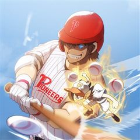
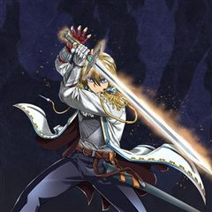
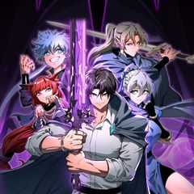
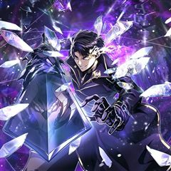
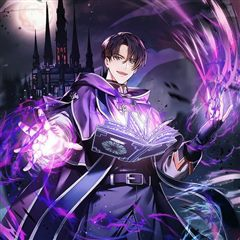
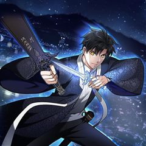
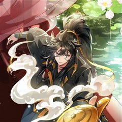
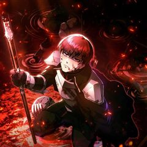

검술명가 막내아들 같은 웹툰 추천

검술명가 막내아들 · AZI / COBY(Contentslabblue) / 조고미 / 도파민 / 이제원 / 황제펭권
검술명가 막내아들 재밌게 봤다면 이 웹툰들도 좋아할 거예요. 같은 장르이면서 회귀 같은 요소가 겹치는 작품을, 겹치는 요소가 많은 순서로 20개 골랐어요.
2026-10-10 기준 · 네이버웹툰·카카오웹툰·레진코믹스 · 성인 작품 제외
내 취향으로 직접 골라 추천받기 →-
1
 네이버웹툰
네이버웹툰현실퀘스트
게임 아이템을 가져오라는 일진의 협박으로 인해 일주일간 밤샘 게임을 하다 죽음을 맞이한 비운의 게임셔틀 하도완 그 순간 일주일 전 교실에서 리스폰되는데... 모든 것이 그날과 똑같다. 달라진 것은 단 하나, 눈앞에 떠있는 <퀘스트 알림>! 뭐? 내가…
회귀액션네이버웹툰에서 보기 → · 현실퀘스트 같은 웹툰 → -
2
 카카오웹툰
카카오웹툰흑백무제
전란의 불이 타오를 때면 그 날이 떠오른다. 나의 가문, 벽산연가가 멸문하던 그 날이... 온몸을 꿰뚫린 아버지 비명횡사한 동생, 지평. 평생을 걸쳐 원수를 찾았지만 알 수 없었다. 누가. 그리고 왜. 살아났다. 그리고 돌아왔다. 벽산연가에. 그 말…
회귀액션카카오웹툰에서 보기 → -
3
 네이버웹툰
네이버웹툰용사보다 너무 강해서 힘을 숨김
어릴 적부터 만화 속에 나오는 주인공보다 평소에는 가벼워 보이지만 사실 누구보다 강한 '힘을 숨긴 캐릭터'가 멋있었다 그리고 찾아온 전생의 기회! "새로운 세상에서 무엇이 되고 싶나요?" "힘숨찐이 되고 싶어!" ...내가 바란 힘숨찐은 이런 게 아…
회귀액션네이버웹툰에서 보기 → -
4
 카카오웹툰
카카오웹툰역대급 창기사의 회귀
무패의 창기사. 기사는 검을 써야만 한다는 고정관념을 철저히 깨부순 공작 가문의 빛나는 별. 제국의 오랜 내전을 일시에 종식시킨 대영웅. 그 이름은 바로 '조슈아 샌더스'. 황제의 역대 최강의 창이라고도 불리는 그가 명성에 어울리지 않는 검붉은 피를…
회귀액션카카오웹툰에서 보기 → -
5
 카카오웹툰
카카오웹툰월령검제
"개 같은 인생이었네… 정말로." 암투가 판치는 마교에서 살아남아 천마의 제자가 됐건만, 결국 사형에게 배신당해 죽음을 맞이한 연소운. 그런데, 눈을 떠보니 마교에 끌려가기 전인 꼬맹이 시절이다?! 지옥 같은 마교의 삶을 반복하기 싫었던 연소운은 새…
회귀액션카카오웹툰에서 보기 → -
6
 네이버웹툰
네이버웹툰환생좌
신의 심심함을 만족시키기 위해 시작된 이면세계, 그로 인해 멸망 직전 위기에 처한 인류는 마지막 생존자 중 한 명인 '강한수'를 과거로 보내 미래를 바꾸려 한다. "너희가 가장 믿어야 할 것은 자신의 능력이다. 쓸모없으면 반드시 버려지기 마련이지"
회귀액션네이버웹툰에서 보기 → -
7
 카카오웹툰
카카오웹툰영웅, 회귀하다
인류 최강의 영웅, 김성인. 모든 것을 내던지며 분투했지만 결국…… 세상의 멸망은 막지 못했다 하지만 그의 전설은 이제 시작이었으니 성인, 20년 전으로 회귀하다! “이번에는…… 반드시 잡는다.” 압도적인 재능과 경험으로 무장한 완전체 영웅의 레이드…
회귀액션카카오웹툰에서 보기 → -
8
 네이버웹툰
네이버웹툰강철을 먹는 플레이어
강철대제 이현욱, 인류의 마지막 구원자인 그가 죽었다. 미래를 바꾸기 위해 그가 회귀한 곳은… 군대?!! 왜 하필 여기냐고!” 복수를 위해 특급 성장하는 이현욱 상병의 강철 먹방이 시작된다!
회귀액션네이버웹툰에서 보기 → -
9
 카카오웹툰
카카오웹툰전생자
[ 시간 역행을 하시겠습니까? ] “1985년 2월 28일. 내가 태어났던 날로.” 멀지 않은 미래, 찢어진 차원에서 괴물들이 등장하고 사람들은 각성자로 발현 된다. 각성자들과 괴물들이 뒤엉킨 혼란의 시대. 나선후는 죽음의 위기에서 태어났을 때로 회…
회귀액션카카오웹툰에서 보기 → -
10
 카카오웹툰
카카오웹툰은해상단 막내아들
『은해상단 막내아들』 천하제일의 상재(商才)를 타고난 은서호. “어째서 무림맹이 나를…….” “맹의 윗분들께서 자네가 거슬린다고 하더군. 쯧, 그놈의 돈이 뭐라고.” 백도 무림을 자처하던 무림맹의 칼에 살해당한 나는 상단 일을 처음 배우던 날로 돌아…
회귀액션카카오웹툰에서 보기 → -
11
 카카오웹툰
카카오웹툰삼류무가 천하제일인
"역시 낭중제일검. 그대는 살려둘 수 없소." 암습당해 죽음의 위기에 처한 백양휘. 아직 가문을 세가로 만들지 못했는데… 분명 그랬는데. "정말 내가 8살로 돌아온 거라고?" 가문은 삼류, 재능은 고금제일. 다시 시작하는 삶. 이번엔 반드시 가문을…
회귀액션카카오웹툰에서 보기 → -
12

카카오웹툰홈 플레이트의 빌런
3,000 안타를 비롯해 수많은 기록을 세운 전설, 홍빈. 40살 마지막 경기에서 '야구의 요정'이 내건 조건을 달성하여 18살로 회귀한다. "메이저리그에 도전하고 싶어요!" 22년 전 과거로 회귀한 홍빈은 다음 조건인 5,000 안타를 달성할 수…
회귀액션카카오웹툰에서 보기 → -
13

카카오웹툰소드마스터로 회귀
환관으로 일생을 제국을 위해 살아왔지만 음모로 인해 역적으로 몰려 죽게 된 유마. ‘한번만 더 다시 기회가 주어진다면...’ 최후의 순간이 다가왔다고 생각한 순간, 유마는 16살의 과거로 회귀하게 된다. 꿈? 아니야, 정말로 난 과거로 돌아온 거야.…
회귀액션카카오웹툰에서 보기 → -
14
 카카오웹툰
카카오웹툰천마 객잔
어느 날, 무림에 떨어진 이방인 주강현. 천신만고 끝에 천마에 자리에 오른다. 하지만 그는 늘 자신의 고향인 21c 대한민국을 그리워했다. 진법이 발동되고 고향으로 돌아갈 줄 알았는데 오히려 과거로 회 귀를 해버렸다. 이런 ㅆ... 영래 객잔. 무림…
회귀액션카카오웹툰에서 보기 → -
15

카카오웹툰멸망급 데스나이트가 회귀함
역사에 길이 남을 재능을 지녔지만, 아크리치 도르고에게 데스나이트로 개조되어 노예처럼 살아온 데미안 학센. 아크리치의 명령에 따라 자기 손으로 가족을 죽이고, 모든 왕국을 멸망시키고 만다. 전 세계가 아크리치 손에 넘어가려는 순간, 정신을 되찾았으나…
회귀액션카카오웹툰에서 보기 → -
16

카카오웹툰용살자의 클래스가 다른 회귀
지크 드레이커, 용살자 가문 직계 혈통 중 최초의 각성 실패자. 검이 아닌 힐러의 재능을 지녔기에 가문에서 쫓겨났다. 강해지기 위해 발버둥치다 비참한 죽음을 맞이한 지크. 죽음의 순간 눈 앞에 의문의 문자들이 떠오른다. [엘더드래곤의 넋이 의지를 가…
회귀액션카카오웹툰에서 보기 → -
17

카카오웹툰사령왕 카르나크
“대체 뼈만 남은 몸으로 뭘 할 수 있느냔 말이야＂ 금단의 술법인 ‘사령술’로 모든 것을 손에 넣고 죽음마저 지배하는 죽음의 왕이 된 카르나크. 하지만 뼈밖에 없는 몸으로 변한 탓에 인간 시절의 ‘쾌락’을 그리워하게 되는데… “시간을 되돌리겠다!”…
회귀액션카카오웹툰에서 보기 → -
18

카카오웹툰무기 먹는 서자님
대한민국 무력(武力)의 정점, 숭무이가(崇武李家). 이철(李鐵)은 서자라는 이유로 무시 당하고 내쫓겼다. 살기 위해 숨어 지냈지만 끝내 쫓기다 가문의 음모로 죽임을 당한다. 그에게 주어진 두번째 기회, 회귀. 이철은 ‘무기 기억을 흡수하는 능력’을…
회귀액션카카오웹툰에서 보기 → -
19

카카오웹툰오늘도 램프를 주웠다
태어날 때부터 천애 고아에 청두잔퇴(靑頭殘腿)였던 주인공 곽청은 어렸을 적 소아마비를 앓았고 한 쪽 다리는 장애를 안고 있었다. 그 불편한 몸으로 온갖 무시를 당하면서도 생계를 위해 서역에서 돌아오는 상인들을 상대로 전병을 팔았는데, 어느 날 집으로…
회귀액션카카오웹툰에서 보기 → -
20

카카오웹툰죽지 않는 천재 창잡이
바로크 왕국의 징벌 부대 소속 백인장 데미안. “젠장.” 한 번만. 딱 한 번만 더 내게 기회가 주어진다면……. ‘진짜 이 녀석들과 함께 전장을 지배했을 텐데.’ 30세의 나이에 이름 없는 전장에서 눈을 감았다. 그런데 눈을 떠 보니, 17년 전으로…
회귀액션카카오웹툰에서 보기 →